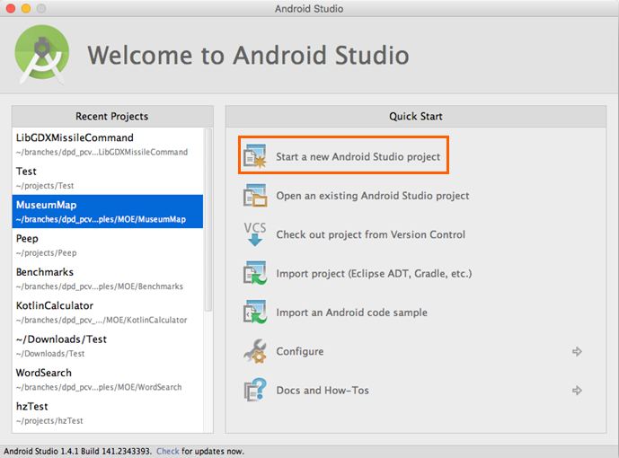
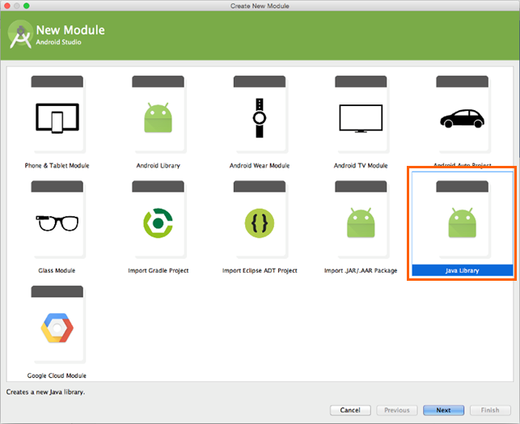
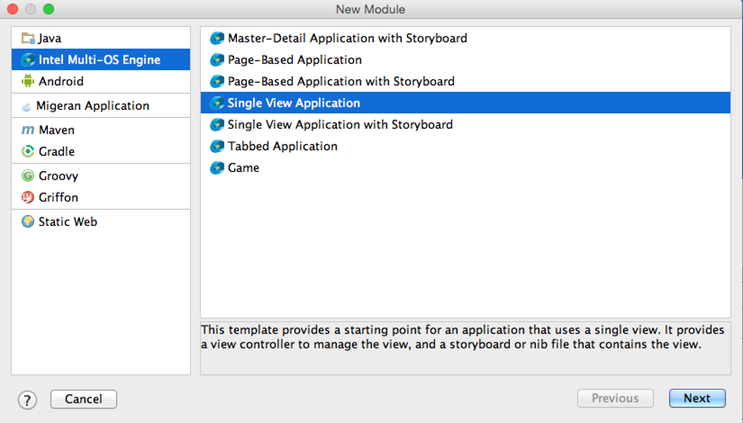
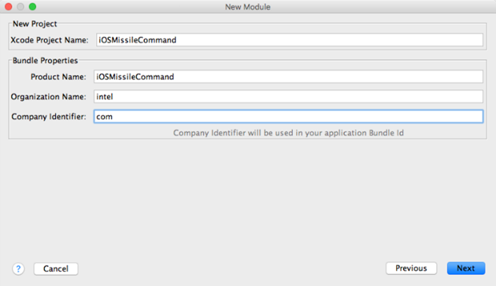
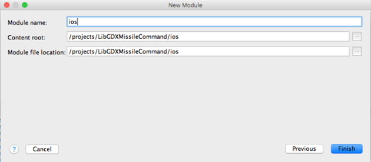
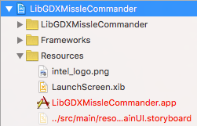
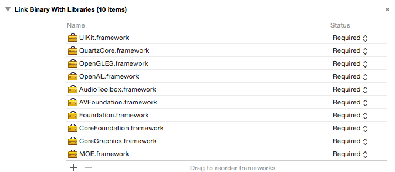

Using LibGDX¶
This page shows you how you can create a Java* game using Intel’s Multi-OS Engine Technical Preview and the libGDX library.
The screen shots below show the game running on an Android* device and an Apple iOS* device. On both operating systems, the game looks and behaves the same way. How is this achieved?
If you are not yet familiar with libGDX, this tutorial will help you start from scratch. So let’s begin. Scroll down!


Set Up Your Environment¶
First, install these applications:
- Git
- Android Studio
- Ant
- Maven
- Multi-OS Engine, a plugin for Android Studio
You need to add Git, Maven and Ant to your system path.
Before we will be create our first libGDX application, we need to set up the environment with right version of libGDX. In our application, we will be use the last version of libGDX (1.7.0 version at the time of this post). To get the last version of libGDX, clone an official libGDX repository from GitHub. To do this, execute this command:
git clone https://github.com/libgdx/libgdx.git
After that, build the libGDX Library using these commands:
ant -f fetch.xml
mvn install
After this build completes, we will have libGDX version with support of Multi-OS Engine in our local maven repository. So we can start to develop our application.
Develop Your App¶
First, let’s create a new Android Studio* project. Launch Android Studio and click Start a new Android Studio project line in the right pane.
Next, configure our project. For example, set LibGDXMisslecommand as the application name.

- Select Phone and Tablet as the form factor for our application.
- Also select the Minimum SDK (Android) version.
- Click Next.
Do not add any activities for our Android application. Click Finish.

So, we created our project! Now let’s develop the common part for our application.
Common Code Part¶
To create the common part of our app, we need to add a new Android Studio module that has a type Java Library. Select Java Library and click Next.
Set the name of our new module, package for our module, and the name of our common class. We will create a java class with name MissileCommand.

After completing this, view the file tree:

First, change the main build.gradle file. Write this code:
import groovy.json.JsonSlurper
buildscript {
// Download information about the latest versions of libGDX components
ant.get(src: 'http://libgdx.badlogicgames.com/libgdx-site/service/getVersions?release=false', dest: 'versions.json')
// Get information from file
def versionFile = file('versions.json')
def json
if (versionFile.exists()) {
json = new JsonSlurper().parseText(versionFile.text)
} else throw new GradleException("Unable to retrieve latest versions, please check your internet connection")
ext {
// Set versions
gdxVersion = json.libgdxSnapshot
roboVMVersion = json.robovmVersion
roboVMGradleVersion = json.robovmPluginVersion
androidToolsVersion = json.androidBuildtoolsVersion
androidSDKVersion = json.androidSDKVersion
androidGradleToolsVersion = json.androidGradleToolVersion
gwtVersion = json.gwtVersion
gwtGradleVersion = json.gwtPluginVersion
}
repositories {
jcenter()
}
dependencies {
classpath 'com.android.tools.build:gradle:1.3.0'
// NOTE: Do not place your application dependencies here; they belong
// in the individual module build.gradle files
}
}
// Set repositories for all projects
allprojects {
repositories {
jcenter()
// Maven local repository necessary for our libGDX version
mavenLocal()
}
}
Before we can write a code for the common part of our app, we need to modify the common/build.gradle file to add a dependency on the libGDX library:
apply plugin: 'java'
sourceCompatibility = 1.7
targetCompatibility = 1.7
dependencies {
compile fileTree(dir: 'libs', include: ['*.jar'])
// libGDX common library
compile "com.badlogicgames.gdx:gdx:$gdxVersion"
}
First of all, create in Common part class Assets for loading resources.
package org.moe.libgdxmissilecommand.common;
import com.badlogic.gdx.Gdx;
import com.badlogic.gdx.audio.Sound;
import com.badlogic.gdx.files.FileHandle;
import com.badlogic.gdx.graphics.Texture;
import com.badlogic.gdx.graphics.g2d.Animation;
import com.badlogic.gdx.graphics.g2d.TextureRegion;
public class Assets {
public static final float screenWidth = 800;
public static final float screenHeight = 480;
// Backgrounds
public static TextureRegion backgroundRegionMenu;
public static TextureRegion backgroundLoadGame1TextureRegion;
public static TextureRegion backgroundLoadGame2TextureRegion;
public static TextureRegion[] levelsBackgroundsTextureRegions = new TextureRegion[4];
// Buttons
public static TextureRegion backButtonTextureRegion;
public static TextureRegion pauseButtonTextureRegion;
public static TextureRegion startButtonTextureRegion;
public static TextureRegion creditsButtonTextureRegion;
// Player
public static TextureRegion playerBaseTextureRegion;
public static TextureRegion playerGunTextureRegion;
// Missiles
public static TextureRegion missileTextureRegion;
public static Sound missileSound;
// Explosions
public static Animation explosionAnimation;
public static Sound explosionSound;
// Cities
public static Animation citiesDestroyAnimation;
public static TextureRegion[] citiesTextureRegions = new TextureRegion[6];
// Naves
public static TextureRegion navesTextureRegion;
// Font file
public static FileHandle fontFile;
public static Sound alarmSound;
private static Texture loadTexture (String file) {
return new Texture(Gdx.files.internal(file));
}
public static void load() {
Texture backgroundMenuTexture = loadTexture("Splash2.png");
backgroundRegionMenu = new TextureRegion(backgroundMenuTexture, 0, 0, 800, 480);
Texture backgroundLoadGame1Texture = loadTexture("aviso1.png");
backgroundLoadGame1TextureRegion = new TextureRegion(backgroundLoadGame1Texture, 0, 0, 800, 480);
Texture backgroundLoadGame2Texture = loadTexture("aviso2.png");
backgroundLoadGame2TextureRegion = new TextureRegion(backgroundLoadGame2Texture, 0, 0, 800, 480);
for (int i = 0; i < levelsBackgroundsTextureRegions.length; i++) {
Texture backgroundLevelTexture = loadTexture("bg" + String.valueOf(i + 1) + ".png");
levelsBackgroundsTextureRegions[i] = new TextureRegion(backgroundLevelTexture, 0, 0, 800, 480);
}
Texture startButtonTexture = loadTexture("btStart.png");
startButtonTextureRegion = new TextureRegion(startButtonTexture, 0, 0, 120, 43);
Texture creditsButtonTexture = loadTexture("btCredits.png");
creditsButtonTextureRegion = new TextureRegion(creditsButtonTexture, 0, 0, 144, 43);
Texture backButtonTexture = loadTexture("btBack.png");
backButtonTextureRegion = new TextureRegion(backButtonTexture, 0, 0, 106, 43);
Texture pauseButtonTexture = loadTexture("btPause.png");
pauseButtonTextureRegion = new TextureRegion(pauseButtonTexture, 0, 0, 81, 22);
Texture playerBaseTexture = loadTexture("canhaopart1.png");
playerBaseTextureRegion = new TextureRegion(playerBaseTexture, 0, 0, 75, 45);
Texture playerGunTexture = loadTexture("canhaopart2.png");
playerGunTextureRegion = new TextureRegion(playerGunTexture, 0, 0, 8, 45);
Texture missileTexture = loadTexture("missil.png");
missileTextureRegion = new TextureRegion(missileTexture, 0, 0, 5, 9);
for (int i = 0; i < citiesTextureRegions.length; i++) {
Texture cityTexture = loadTexture("city" + String.valueOf(i + 1) + ".png");
citiesTextureRegions[i] = new TextureRegion(cityTexture, 0, 0, 80, 80);
}
Texture citiesDestroy = loadTexture("cidade.png");
citiesDestroyAnimation = new Animation(0.2f, new TextureRegion(citiesDestroy,2,53,51,59),
new TextureRegion(citiesDestroy,55,2,51,15));
fontFile = Gdx.files.internal("arial.fnt");
alarmSound = Gdx.audio.newSound(Gdx.files.internal("alarm.mp3"));
missileSound = Gdx.audio.newSound(Gdx.files.internal("missil.mp3"));
Texture explosion = loadTexture("explosao1.png");
explosionAnimation = new Animation(0.2f, new TextureRegion(explosion,8,8,26,22),
new TextureRegion(explosion,35,8,40,38), new TextureRegion(explosion,76,8,60,56),
new TextureRegion(explosion,137,8,74,76), new TextureRegion(explosion,8,85,74,68),
new TextureRegion(explosion,83,85,72,68), new TextureRegion(explosion,156,85,68,62),
new TextureRegion(explosion,8,154,62,60), new TextureRegion(explosion,71,154,58,56));
explosionSound = Gdx.audio.newSound(Gdx.files.internal("bomb.mp3"));
Texture nave = loadTexture("naves.png");
navesTextureRegion = new TextureRegion(nave, 12, 20);
}
public static void playSound(Sound sound) {
sound.play(1);
}
}
Next, change the MissileCommand class. Write the following code in our MissileCommand.java file. Use the comments in this code to help understand it.
package org.moe.libgdxmissilecommand.common;
import com.badlogic.gdx.Game;
import com.badlogic.gdx.Gdx;
import com.badlogic.gdx.graphics.g2d.SpriteBatch;
import org.moe.libgdxmissilecommand.common.screens.MainMenuScreen;
// Main game class
public class MissileCommand extends Game {
// used by all screens
public SpriteBatch batcher;
@Override
public void create () {
Gdx.input.setCatchBackKey(true);
batcher = new SpriteBatch();
// Load resources
Assets.load();
// Draw main menu
setScreen(new MainMenuScreen(this));
}
@Override
public void render() {
super.render();
}
}
Next create package for all game screens and create class MainMenuScreen for the main menu.
package org.moe.libgdxmissilecommand.common.screens;
import com.badlogic.gdx.Gdx;
import com.badlogic.gdx.Input;
import com.badlogic.gdx.ScreenAdapter;
import com.badlogic.gdx.graphics.GL20;
import com.badlogic.gdx.graphics.OrthographicCamera;
import com.badlogic.gdx.graphics.g2d.Sprite;
import com.badlogic.gdx.math.Vector3;
import org.moe.libgdxmissilecommand.common.MissileCommand;
import org.moe.libgdxmissilecommand.common.Assets;
public class MainMenuScreen extends ScreenAdapter {
MissileCommand game;
OrthographicCamera guiCam;
Sprite startButton;
Sprite creditsButton;
Vector3 touchPoint;
public MainMenuScreen (MissileCommand game) {
this.game = game;
// initialize camera
guiCam = new OrthographicCamera(Assets.screenWidth, Assets.screenHeight);
guiCam.position.set(Assets.screenWidth / 2, Assets.screenHeight / 2, 0);
// Create buttons
startButton = new Sprite(Assets.startButtonTextureRegion);
startButton.setPosition(Assets.screenWidth / 2 - startButton.getWidth() / 2, startButton.getHeight() * 2.5f);
creditsButton = new Sprite(Assets.creditsButtonTextureRegion);
creditsButton.setPosition(Assets.screenWidth / 2 - creditsButton.getWidth() / 2, creditsButton.getHeight());
touchPoint = new Vector3();
}
// Find events
public void update () {
if (Gdx.input.isKeyPressed(Input.Keys.BACK)) {
Gdx.app.exit();
}
if (Gdx.input.justTouched()) {
guiCam.unproject(touchPoint.set(Gdx.input.getX(), Gdx.input.getY(), 0));
// Update screen
if (startButton.getBoundingRectangle().contains(touchPoint.x, touchPoint.y)) {
game.setScreen(new MissleCommandGameScreen(game));
return;
}
if (creditsButton.getBoundingRectangle().contains(touchPoint.x, touchPoint.y)) {
game.setScreen(new CreditsScreen(game));
return;
}
}
}
// Draw elements
public void draw () {
GL20 gl = Gdx.gl;
gl.glClearColor(1, 0, 0, 1);
gl.glClear(GL20.GL_COLOR_BUFFER_BIT);
guiCam.update();
game.batcher.setProjectionMatrix(guiCam.combined);
game.batcher.disableBlending();
game.batcher.begin();
game.batcher.draw(Assets.backgroundRegionMenu, 0, 0, Assets.screenWidth, Assets.screenHeight);
game.batcher.end();
game.batcher.enableBlending();
game.batcher.begin();
startButton.draw(game.batcher);
creditsButton.draw(game.batcher);
game.batcher.end();
}
@Override
public void render (float delta) {
update();
draw();
}
}
Create the class CreditsScreen with some information about our game.
package org.moe.libgdxmissilecommand.common.screens;
import com.badlogic.gdx.Gdx;
import com.badlogic.gdx.Input;
import com.badlogic.gdx.ScreenAdapter;
import com.badlogic.gdx.graphics.GL20;
import com.badlogic.gdx.graphics.OrthographicCamera;
import com.badlogic.gdx.graphics.g2d.BitmapFont;
import com.badlogic.gdx.graphics.g2d.Sprite;
import com.badlogic.gdx.math.Vector3;
import org.moe.libgdxmissilecommand.common.MissileCommand;
import org.moe.libgdxmissilecommand.common.Assets;
public class CreditsScreen extends ScreenAdapter {
MissileCommand game;
OrthographicCamera guiCam;
Sprite backButton;
Vector3 touchPoint;
BitmapFont font;
public CreditsScreen(MissileCommand game) {
this.game = game;
font = new BitmapFont(Assets.fontFile);
font.getData().setScale(0.7f);
guiCam = new OrthographicCamera(Assets.screenWidth, Assets.screenHeight);
guiCam.position.set(Assets.screenWidth / 2, Assets.screenHeight / 2, 0);
backButton = new Sprite(Assets.backButtonTextureRegion);
backButton.setPosition(Assets.screenWidth / 2 - backButton.getWidth() / 2, backButton.getHeight());
touchPoint = new Vector3();
}
public void update () {
if (Gdx.input.justTouched()) {
guiCam.unproject(touchPoint.set(Gdx.input.getX(), Gdx.input.getY(), 0));
if (backButton.getBoundingRectangle().contains(touchPoint.x, touchPoint.y)) {
game.setScreen(new MainMenuScreen(game));
return;
}
}
if (Gdx.input.isKeyPressed(Input.Keys.BACK)){
return;
}
}
public void draw () {
GL20 gl = Gdx.gl;
gl.glClearColor(1, 0, 0, 1);
gl.glClear(GL20.GL_COLOR_BUFFER_BIT);
guiCam.update();
game.batcher.setProjectionMatrix(guiCam.combined);
game.batcher.disableBlending();
game.batcher.begin();
game.batcher.draw(Assets.backgroundRegionMenu, 0, 0, Assets.screenWidth, Assets.screenHeight);
game.batcher.end();
game.batcher.enableBlending();
game.batcher.begin();
backButton.draw(game.batcher);
font.draw(game.batcher, "Programmer: Matheus Palheta\n\nGame Design: Jucimar Jr", 200, 320);
game.batcher.end();
}
@Override
public void render (float delta) {
update();
draw();
}
@Override
public void pause () {
//Settings.save();
}
}
Create the main game screen class MissleCommandGameScreen.
package org.moe.libgdxmissilecommand.common.screens;
import com.badlogic.gdx.Gdx;
import com.badlogic.gdx.ScreenAdapter;
import com.badlogic.gdx.graphics.GL20;
import com.badlogic.gdx.graphics.OrthographicCamera;
import com.badlogic.gdx.graphics.g2d.BitmapFont;
import com.badlogic.gdx.graphics.g2d.Sprite;
import com.badlogic.gdx.math.Rectangle;
import com.badlogic.gdx.math.Vector3;
import org.moe.libgdxmissilecommand.common.Assets;
import org.moe.libgdxmissilecommand.common.MissileCommand;
import org.moe.libgdxmissilecommand.common.models.City;
import org.moe.libgdxmissilecommand.common.models.GameObject;
import org.moe.libgdxmissilecommand.common.models.Nave;
import java.util.ArrayList;
public class MissleCommandGameScreen extends ScreenAdapter {
private MissileCommand game;
private OrthographicCamera guiCam;
private BitmapFont fontTime;
private BitmapFont fontTitle;
private int levelBackgroung = 0;
private long lastAttackTime = 0;
private float time = 0;
private boolean playing = true;
private Sprite pauseButton;
private Sprite backButton;
private Vector3 touchPoint;
private int wave = 1;
private long verNaves = 0;
private long score = 0;
private ArrayList<org.moe.libgdxmissilecommand.common.models.Missile> missiles = new ArrayList<>();
private ArrayList<Nave> naves = new ArrayList<>();
City[] cities = new City[6];
org.moe.libgdxmissilecommand.common.models.Player player;
public MissleCommandGameScreen(MissileCommand game) {
this.game = game;
fontTime = new BitmapFont(Assets.fontFile);
fontTime.getData().setScale(0.5f);
fontTitle = new BitmapFont(Assets.fontFile);
fontTitle.getData().setScale(0.7f);
// Initialize camera
guiCam = new OrthographicCamera(Assets.screenWidth, Assets.screenHeight);
guiCam.position.set(Assets.screenWidth / 2, Assets.screenHeight / 2, 0);
// Create buttons
pauseButton = new Sprite(Assets.pauseButtonTextureRegion);
pauseButton.setPosition(Assets.screenWidth - (pauseButton.getWidth() + 2), 5);
backButton = new Sprite(Assets.backButtonTextureRegion);
backButton.setPosition(Assets.screenWidth - (backButton.getWidth() + 2), 2);
touchPoint = new Vector3();
// Create player
player = new org.moe.libgdxmissilecommand.common.models.Player();
player.setPosition(Assets.screenWidth / 2, Assets.screenHeight / 24);
// Create cities
City.resetCounter();
for (int i = 0; i < cities.length; i++) {
cities[i] = new City();
}
}
// Draw elements
private void draw() {
GL20 gl = Gdx.gl;
gl.glClearColor(1, 0, 0, 1);
gl.glClear(GL20.GL_COLOR_BUFFER_BIT);
guiCam.update();
game.batcher.setProjectionMatrix(guiCam.combined);
game.batcher.begin();
game.batcher.draw(Assets.levelsBackgroundsTextureRegions[levelBackgroung], 0, 0, Assets.screenWidth, Assets.screenHeight);
game.batcher.end();
game.batcher.enableBlending();
if (playing)
checkCollisions();
game.batcher.begin();
float dt = Gdx.graphics.getDeltaTime();
for (City city : cities) {
if (playing)
city.update(dt);
city.draw(game.batcher);
}
if (playing) {
time -= dt;
if (time > 20 / wave && (System.currentTimeMillis() - verNaves > 5000) && City.getCityCounter() > 0) {
addNaves();
}
}
int printTime = (int) time;
if (printTime < 0)
printTime = 0;
fontTime.draw(game.batcher, "Time: " + String.valueOf(printTime) + "s",
Assets.screenWidth - 150, Assets.screenHeight - 25);
fontTime.draw(game.batcher, "Score: " + String.valueOf(score),
2, Assets.screenHeight - 25);
for(int i = 0; i < missiles.size(); i++) {
org.moe.libgdxmissilecommand.common.models.Missile missile = missiles.get(i);
if (missile.isAlive()) {
if (playing)
missile.update(dt);
missile.draw(game.batcher);
} else {
missiles.remove(i);
i--;
}
}
player.draw(game.batcher);
for(int i = 0; i < naves.size(); i++) {
Nave nave = naves.get(i);
if (nave.isAlive()) {
if (playing)
nave.update(dt);
nave.draw(game.batcher);
} else {
naves.remove(i);
i--;
}
}
if (playing) {
if (time <= 0) {
fontTitle.draw(game.batcher, "Wave " + String.valueOf(wave) +
" Starts in " + String.valueOf((int)(3 + time)) + "s",
230, 240);
if (time < -3) {
time = 60;
wave++;
levelBackgroung = (wave - 2) % 4;
}
}
pauseButton.draw(game.batcher);
} else {
if (City.getCityCounter() > 0) {
fontTitle.draw(game.batcher, "Touch the screen to resuming the game",
100, 320 + fontTitle.getLineHeight());
fontTitle.draw(game.batcher, "Or press back button to exit in the main menu",
70, 320 - fontTitle.getLineHeight());
} else {
fontTitle.draw(game.batcher, "You Lose!",
320, 320 + fontTitle.getLineHeight());
fontTitle.draw(game.batcher, "Score: " + String.valueOf(score),
320, 320 - fontTitle.getLineHeight());
}
backButton.draw(game.batcher);
}
fontTime.draw(game.batcher, "fps: " + Gdx.graphics.getFramesPerSecond(), 0, 0);
game.batcher.end();
}
// Check events
private void update() {
if (City.getCityCounter() <= 0) {
playing = false;
}
if (Gdx.input.justTouched()) {
guiCam.unproject(touchPoint.set(Gdx.input.getX(), Gdx.input.getY(), 0));
if (pauseButton.getBoundingRectangle().contains(touchPoint.x, touchPoint.y) && playing) {
playing = false;
return;
}
if (backButton.getBoundingRectangle().contains(touchPoint.x, touchPoint.y)) {
game.setScreen(new MainMenuScreen(game));
return;
}
if (!playing) {
if (City.getCityCounter() > 0)
playing = true;
return;
}
if (System.currentTimeMillis() - lastAttackTime > 450 && touchPoint.y >= player.getY()) {
lastAttackTime = System.currentTimeMillis();
missiles.add(new org.moe.libgdxmissilecommand.common.models.Missile());
missiles.get(missiles.size() - 1).detectTarget(touchPoint.x, touchPoint.y);
player.setRotation(missiles.get(missiles.size() - 1).getRotation());
}
}
}
// Add new naves
private void addNaves() {
naves.add(new Nave(wave));
naves.add(new Nave(wave));
naves.add(new Nave(wave));
verNaves = System.currentTimeMillis();
}
@Override
public void render (float delta) {
update();
draw();
}
// Check all collisions in the game
private void checkCollisions() {
for(int i = 0; i < naves.size(); i++) {
for (City city : cities) {
if (isCollision(naves.get(i), city)) {
naves.get(i).kill();
city.kill();
}
}
for(int j = 0; j < missiles.size(); j++) {
if (isCollision(naves.get(i), missiles.get(j)) && naves.get(i).kill()) {
score++;
missiles.get(j).kill();
}
}
}
}
// Check collision
private <T extends GameObject> boolean isCollision(T obj1, T obj2) {
Rectangle r1 = obj1.collisionRectangle();
Rectangle r2 = obj2.collisionRectangle();
return !(r1 == null || r2 == null) && r2.overlaps(r1);
}
}
We created all the screens for our game. So now we should create some models such as Player, Naves and others for our game. Create a new module models and create the base class GameObject for all objects in our game.
package org.moe.libgdxmissilecommand.common.models;
import com.badlogic.gdx.graphics.g2d.Sprite;
import com.badlogic.gdx.graphics.g2d.TextureRegion;
import com.badlogic.gdx.math.Rectangle;
public class GameObject extends Sprite {
protected boolean alive = true;
protected float explosionTime;
GameObject(TextureRegion region) {
super(region);
explosionTime = -1;4
}
// Check object
public boolean isAlive() {
return alive;
}
// update object
public void update(float deltaTime) {}
// kill object
public boolean kill() {
if (Float.compare(explosionTime, -1) == 0) {
explosionTime = -100;
return true;
}
return false;
}
// get collision rectangle for object
public Rectangle collisionRectangle() {
if (!alive) {
return null;
}
return getBoundingRectangle();
}
}
Create the Player class.
package org.moe.libgdxmissilecommand.common.models;
import com.badlogic.gdx.graphics.g2d.Batch;
import com.badlogic.gdx.graphics.g2d.Sprite;
import org.moe.libgdxmissilecommand.common.Assets;
public class Player extends GameObject {
private Sprite playerBase;
public Player() {
super(Assets.playerGunTextureRegion);
playerBase = new Sprite(Assets.playerBaseTextureRegion);
setOrigin(getWidth() / 2, 0);
}
@Override
public void setPosition(float x, float y) {
// Need override only for playerBase sprite
super.setPosition(x - getWidth() / 2, y + 10);
playerBase.setPosition(x - (playerBase.getWidth() / 2), y);
}
@Override
public void draw(Batch batch) {
// Need override only for playerBase sprite
super.draw(batch);
playerBase.draw(batch);
}
}
Create the Missile class.
package org.moe.libgdxmissilecommand.common.models;
import com.badlogic.gdx.graphics.g2d.Batch;
import com.badlogic.gdx.graphics.g2d.TextureRegion;
import com.badlogic.gdx.math.Vector2;
import org.moe.libgdxmissilecommand.common.Assets;
public class Missile extends GameObject {
// Speed of missile
private final float speed = 600.0f;
private float targetY;
public Missile() {
super(Assets.missileTextureRegion);
setPosition(Assets.screenWidth / 2, Assets.screenHeight / 24 + 10);
// Start sound
Assets.playSound(Assets.missileSound);
targetY = 0;
}
// Detect missile target
public void detectTarget(float x, float y) {
targetY = y;
Vector2 tempVector = new Vector2(x, y);
setRotation(tempVector.sub(this.getX(), this.getY()).angle() - 90);
}
@Override
public void update(float deltaTime) {
// Move missile
if (getY() > targetY || getX() < 0 || getX() > Assets.screenWidth || explosionTime >= 0) {
explosionTime += deltaTime;
return;
}
float hypotenuse = speed*deltaTime;
float shiftY = (float) Math.abs((hypotenuse * Math.cos(getRotation() * Math.PI/180)));
float shiftX = (float) Math.abs((hypotenuse * Math.sin(getRotation() * Math.PI/180)));
if (Math.sin(getRotation() * Math.PI / 180) > 0) {
shiftX = -shiftX;
}
setPosition(getX() + shiftX, getY() + shiftY);
}
@Override
public void draw(Batch batch) {
if (getY() > targetY || getX() < 0 || getX() > Assets.screenWidth || Float.compare(explosionTime, -1) != 0) {
// Draw explosion animation
if (explosionTime < 0) {
explosionTime = 0;
Assets.playSound(Assets.explosionSound);
}
TextureRegion keyFrame = Assets.explosionAnimation.getKeyFrame(explosionTime, false);
batch.draw(keyFrame, getX() - 74 / 2, getY() - 76 / 2, 74, 76);
if (Assets.explosionAnimation.isAnimationFinished(explosionTime))
alive = false;
} else {
// Draw missile
super.draw(batch);
}
}
}
Now create the class Naves.
package org.moe.libgdxmissilecommand.common.models;
import com.badlogic.gdx.graphics.g2d.Batch;
import com.badlogic.gdx.graphics.g2d.TextureRegion;
import org.moe.libgdxmissilecommand.common.Assets;
import java.security.SecureRandom;
public class Nave extends GameObject {
private float velX = 0, velY = 0;
public Nave(int wave) {
super(Assets.navesTextureRegion);
SecureRandom random = new SecureRandom();
// Init position
int posX = random.nextInt((int) Assets.screenWidth);
setPosition(posX, Assets.screenHeight);
// Calculate init rotation
float angle;
if (posX < 400) {
angle = -random.nextFloat() * 45;
velX = (float) (Math.sin(angle * Math.PI/180) * (wave / 2));
velY = (float) (Math.cos(angle * Math.PI/180) * (wave / 2));
} else {
angle = random.nextFloat() * 45;
velX = (float) (Math.sin(angle * Math.PI/180) * (wave / 2));
velY = (float) (Math.cos(angle * Math.PI/180) * (wave / 2));
}
setRotation(-angle);
}
@Override
public void update(float deltaTime) {
// Move nave
if (getY() < 30 || explosionTime >= 0) {
explosionTime += deltaTime;
return;
}
setPosition(getX() - velX, getY() - velY);
}
@Override
public void draw(Batch batch) {
if (getY() < 30 || Float.compare(explosionTime, -1) != 0) {
// Draw explosion animation
if (explosionTime < 0) {
explosionTime = 0;
Assets.playSound(Assets.explosionSound);
}
TextureRegion keyFrame = Assets.explosionAnimation.getKeyFrame(explosionTime, false);
batch.draw(keyFrame, getX() - 74 / 2, getY() - 76 / 2, 74, 76);
if (Assets.explosionAnimation.isAnimationFinished(explosionTime))
alive = false;
} else {
// Draw nave
super.draw(batch);
}
}
}
And also create class City for cities.
package org.moe.libgdxmissilecommand.common.models;
import com.badlogic.gdx.graphics.g2d.Batch;
import com.badlogic.gdx.graphics.g2d.TextureRegion;
import org.moe.libgdxmissilecommand.common.Assets;
import java.security.SecureRandom;
public class City extends GameObject {
// Cities counter
static long cityCounter = 0;
public City() {
// Take random texture
super(Assets.citiesTextureRegions[new SecureRandom().nextInt(6)]);
// Init position
if (cityCounter < 3) {
setPosition(50 + ((Assets.screenWidth - 200) / 6) * cityCounter, Assets.screenHeight / 24);
} else {
setPosition(50 + ((Assets.screenWidth - 200) / 6) * cityCounter + 120, Assets.screenHeight / 24);
}
cityCounter++;
}
// Reset counter
public static void resetCounter() {
cityCounter = 0;
}
// Get counter
public static long getCityCounter() {
return cityCounter;
}
@Override
public void update(float deltaTime) {
// Update explosion animation
if (explosionTime >= 0)
explosionTime += deltaTime;
}
@Override
public void draw(Batch batch) {
if (Float.compare(explosionTime, -1) != 0) {
// Draw animation
if (explosionTime < 0) {
explosionTime = 0;
Assets.playSound(Assets.explosionSound);
}
TextureRegion keyFrame = Assets.citiesDestroyAnimation.getKeyFrame(explosionTime, false);
if (Assets.citiesDestroyAnimation.getKeyFrameIndex(explosionTime) == 1) {
batch.draw(keyFrame, getX(), getY(), getWidth(), 15);
if (isAlive())
cityCounter--;
alive = false;
} else {
batch.draw(keyFrame, getX(), getY(), getWidth(), getHeight());
}
} else {
// Draw city
super.draw(batch);
}
}
}
That completes the common part of our application! Now we can start to develop the Android and/or iOS parts of our game.
Android Code Part¶
To develop the Android part of our app, modify the build.gradle for your Android project (app/build.gradle). We need to add to dependencies on some libGDX libraries. We also need to copy native libGDX libraries to our project. Please write this code in app/build.gradle:
apply plugin: 'com.android.application'
android {
compileSdkVersion 23
buildToolsVersion "23.0.2"
defaultConfig {
applicationId "org.moe.libgdxmissilecommand.android"
minSdkVersion 15
targetSdkVersion 23
versionCode 1
versionName "1.0"
}
buildTypes {
release {
minifyEnabled false
proguardFiles getDefaultProguardFile('proguard-android.txt'), 'proguard-rules.pro'
}
}
}
configurations { natives }
dependencies {
compile fileTree(dir: 'libs', include: ['*.jar'])
compile 'com.android.support:appcompat-v7:23.1.1'
compile project(':common')
compile "com.badlogicgames.gdx:gdx-backend-android:$gdxVersion"
natives "com.badlogicgames.gdx:gdx-platform:$gdxVersion:natives-x86"
natives "com.badlogicgames.gdx:gdx-platform:$gdxVersion:natives-armeabi"
natives "com.badlogicgames.gdx:gdx-platform:$gdxVersion:natives-armeabi-v7a"
}
// needed to add JNI shared libraries to APK when compiling on CLI
tasks.withType(com.android.build.gradle.tasks.PackageApplication) { pkgTask ->
pkgTask.jniFolders = new HashSet<File>()
pkgTask.jniFolders.add(new File(projectDir, 'libs'))
}
// called every time gradle gets executed, takes the native dependencies of
// the natives configuration, and extracts them to the proper libs/ folders
// so they get packed with the APK.
task copyAndroidNatives() {
file("libs/armeabi/").mkdirs();
file("libs/armeabi-v7a/").mkdirs();
file("libs/x86/").mkdirs();
configurations.natives.files.each { jar ->
def outputDir = null
if(jar.name.endsWith("natives-armeabi-v7a.jar")) outputDir = file("libs/armeabi-v7a")
if(jar.name.endsWith("natives-armeabi.jar")) outputDir = file("libs/armeabi")
if(jar.name.endsWith("natives-x86.jar")) outputDir = file("libs/x86")
if(outputDir != null) {
copy {
from zipTree(jar)
into outputDir
include "*.so"
}
}
}
}
Now we can create Main class for our Android application. Let’s create a class named Main. Modify the AndroidManifest.xml file to add to it our activity (Main class). You can see the revised AndroidManifest.xml below.
<manifest xmlns:android="http://schemas.android.com/apk/res/android"
package="org.moe.libgdxmissilecommand.android">
<application android:allowBackup="true" android:label="@string/app_name"
android:icon="@mipmap/ic_launcher" android:supportsRtl="true"
android:theme="@style/AppTheme">
<activity
android:name=".Main"
android:label="@string/app_name"
android:screenOrientation="landscape"
android:configChanges="keyboard|keyboardHidden|orientation">
<intent-filter>
<action android:name="android.intent.action.MAIN" />
<category android:name="android.intent.category.LAUNCHER" />
</intent-filter>
</activity>
</application>
</manifest>
Next, modify our Main class to create a libGDX Android activity. It is not hard. We need add AndroidApplication from& com.badlogic.gdx.backends.android as parent of the Main class and override the onCreate function.
package org.moe.libgdxmissilecommand.android;
import android.os.Bundle;
import com.badlogic.gdx.backends.android.AndroidApplication;
import com.badlogic.gdx.backends.android.AndroidApplicationConfiguration;
import org.moe.libgdxmissilecommand.common.MissileCommand;
public class Main extends AndroidApplication {
@Override
protected void onCreate (Bundle savedInstanceState) {
super.onCreate(savedInstanceState);
AndroidApplicationConfiguration config = new AndroidApplicationConfiguration();
initialize(new MissileCommand(), config);
}
}
Finally, add images, sounds and others asset files for our game. You can download these files from here (All resources were taken from this project and they are distributed under MIT license). After you download these files (archive), create a directory named assets in your source directory tree for your Android application. Extract these downloaded files to the assets folder.

Congratulations! We completed our Android game. Now we can build and run the game! You can see the running app in the screen shot below.

iOS Code Part¶
First, create a new Multi-OS Engine module. Click File > New >Multi-OS Engine Module. After that choose Single View Application as a template for a new module.
Click Next. In the next window, set some module parameters as Xcode Project Name, Product Name, Organization Name and others. Set LibGDXPlain as the Xcode Project name and as Product name.
In the next window, choose a name for new module, such as ios. Click the Finish button to create our module.
After the module gets created, we can remove all layout and storyboard files from resources. Also, remove the ui package with all classes from the source directory.
Next, change our build.gradle file for iOS module by including libGDX libraries.
buildscript {
repositories {
mavenCentral()
maven {
url uri(System.getenv("MOE_HOME") + "/gradle")
}
}
dependencies {
classpath 'org.intel.gradle:xRTGradlePlugin:1.0'
}
}
apply plugin: 'xrt'
configurations { natives }
// Extracts native libs (*.a) from the native-ios.jar and places them
// under build/libs/ios/.
task copyNatives << {
file("xcode/native/ios/").mkdirs();
configurations.natives.files.each { jar ->
def outputDir = null
if (jar.name.endsWith("natives-ios.jar")) outputDir = file("xcode/native/ios")
if (outputDir != null) {
FileCollection fileCollection = zipTree(jar)
for (File libFile : fileCollection) {
if (libFile.getAbsolutePath().endsWith(".a") && !libFile.getAbsolutePath().contains("/tvos/")) {
copy {
from libFile.getAbsolutePath()
into outputDir
}
}
}
}
}
}
dependencies {
compile fileTree(dir: 'lib', include: '*.jar')
compile project(":common")
compile "com.badlogicgames.gdx:gdx-backend-moe:$gdxVersion"
natives "com.badlogicgames.gdx:gdx-platform:$gdxVersion:natives-ios"
}
xrt {
}
buildApp.dependsOn copyNatives
Also we will remove some information for detecting main storyboard file and screen orientation from Info.plist (module_name/xcode/project_name/Info.plist). Here is the original Info.plist before:
<?xml version="1.0" encoding="UTF-8"?>
<!DOCTYPE plist PUBLIC "-//Apple//DTD PLIST 1.0//EN"
"http://www.apple.com/DTDs/PropertyList-1.0.dtd">
<plist version="1">
<dict>
...
<key>UISupportedInterfaceOrientations</key>
<array>
<string>UIInterfaceOrientationPortrait</string>
<string>UIInterfaceOrientationLandscapeLeft</string>
<string>UIInterfaceOrientationLandscapeRight</string>
</array>
<key>UISupportedInterfaceOrientations~ipad</key>
<array>
<string>UIInterfaceOrientationPortrait</string>
<string>UIInterfaceOrientationLandscapeLeft</string>
<string>UIInterfaceOrientationLandscapeRight</string>
</array>
...
<key>UIMainStoryboardFile</key>
<string>MainUI</string>
...
</dict>
</plist>
Here is the Info.plist after:
<?xml version="1.0" encoding="UTF-8"?>
<!DOCTYPE plist PUBLIC "-//Apple//DTD PLIST 1.0//EN"
"http://www.apple.com/DTDs/PropertyList-1.0.dtd">
<plist version="1">
<dict>
...
<key>UISupportedInterfaceOrientations</key>
<array>
<string>UIInterfaceOrientationLandscapeLeft</string>
<string>UIInterfaceOrientationLandscapeRight</string>
</array>
<key>UISupportedInterfaceOrientations~ipad</key>
<array>
<string>UIInterfaceOrientationLandscapeLeft</string>
<string>UIInterfaceOrientationLandscapeRight</string>
</array>
...
</dict>
</plist>
Modify our Main class to create a libGDX iOS activity.
package org.moe.libgdxmissilecommand.ios;
import com.badlogic.gdx.backends.iosmoe.IOSApplication;
import com.badlogic.gdx.backends.iosmoe.IOSApplicationConfiguration;
import org.moe.libgdxmissilecommand.common.MissileCommand;
import org.moe.natj.general.Pointer;
import org.moe.natj.objc.ann.ObjCClassName;
import org.moe.natj.objc.ann.Selector;
import ios.uikit.c.UIKit;
@ObjCClassName("Main")
public class Main extends IOSApplication.Delegate {
protected Main(Pointer peer) {
super(peer);
}
@Selector("alloc")
public static native Main alloc();
public static void main(String[] args) {
UIKit.UIApplicationMain(0, null, null, Main.class.getSimpleName());
}
@Override
protected IOSApplication createApplication() {
IOSApplicationConfiguration config = new IOSApplicationConfiguration();
return new IOSApplication(new MissileCommand(), config);
}
}
Now we will modify the Xcode project. Right-click its name and select Multi-OS Engine > Open Project in Xcode.

The Xcode project will be opened and we should see the next screen:
Remove MainUI.storyboard in the Resources directory.
Next, add resources to Xcode. Click the right mouse button on the Resources directory and choose add files to our project. Next, find our resources in our project (You can use resources from you android module or download from here). All resources were taken from this project and they are distributed under MIT license) and add it to the Xcode project. The result you can see below.

Add libGDXLibrary to the Xcode project by changing Linker Flags in Build Settings > Linking >Other Linker Flags and add to it the following parameters:
-force_load "$(SRCROOT)/native/ios/libObjectAL.a"
-force_load "$(SRCROOT)/native/ios/libgdx.a"
Finally, add the necessary frameworks to our application. We need to add these frameworks:
- AudioToolbox
- AVFoundation
- CoreFoundation
- CoreGraphics
- Foundation
- OpenAL
- OpenGLES
- QuartzCore
- UIKit
We need to add these to Build Phases > Link Binary With Libraries.
Congratulations! We completed our iOS game and our application. You can see iOS game screenshot below.

Debug Your App¶
We can now explore how you can debug your libGDX application. The libGDX debug process is not specific, so we can debug our libGDX game as usual Multi-OS Engine app. To begin, set some breakpoints.
For example, set two breakpoints in our common code part. First, set a breakpoint at the start of game creating function (create()) at line 15 (MissleCommand.java:MissleCommand.create():15).

Set the second breakpoint in file MainMenuScreen.java line 55 (start of draw function). (MainMenuScreen. MainMenuScreen.draw():55).

Now we can run our application with debugging. While debugging, use all opportunities to debug your code such as Step Over, Step Into, Resume program. Also you can use stack trace to help debug your application.

Use a stack trace to see values of variables on a previous step. You can see it below.

Download Resources.zip and Multi-OS Samples
You can download resources.zip here.
You can download all Multi-OS Engine samples here.
Summary and Resources¶
LibGDX development with the Multi-OS Engine has many advantages, including:
- The biggest part of application is the common part.
- The common part uses familiar Java syntax.
- You can debug two targets side-by-side using the powerful iOS simulator and Android emulator.